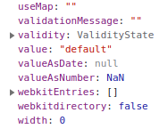

이건 p에오

미리 정의된 형식의 텍스트
hahaha
프로미스를 이해하기 위해서는 자바스크립트가 자료를 어떻게 비동기적으로 받아오는 지, 해당 원리를 이해할 필요가 있다.
2021.09.18 - [개발 공부/Browser] - Event Loop & Task queue 이벤트 루프와 태스크 큐
Event Loop & Task queue 이벤트 루프와 태스크 큐
📌 브라우저 환경 📍 자바스크립트 엔진 (싱글 스레드) 대부분의 자바스크립트 엔진은 크게 2가지 영역으로 구분할 수 있다. ✔ 콜 스택 call stack (실행 컨텍스트 스택) 소스코드 평가 과정에서
code-designer.tistory.com
📍 H1
📍 H2
📌 프로미스 등장 배경
자바스크립트 콜백 함수와 비동기 처리 Call back func & Asynchronous
콜백 함수를 이해하기 위해서는 자바스크립트가 자료를 어떻게 비동기적으로 받아오는 지, 해당 배경을 이해할 필요가 있다. 2021.09.18 - [개발 공부/Browser] - Event Loop & Task queue 이벤트 루프와 태스
code-designer.tistory.com
📌 프로미스 promise란?
호스트 객체가 아닌, ECMAScript 사양에 정의된 표준 빌트인 객체이다.
Promise 생성자 함수를 new 연산자와 함께 호출하면 Promise 객체를 생성한다.
Promise 생성자 함수는 비동기 처리를 수행할 콜백 함수를 인수로 전달받는다. (resolve 함수 & reject 함수)
// 프로미스 생성
const promise = new Promise((resolve, reject) => {
if(/*비동기 처리 성공*/){
resolve('result');
}
else{
reject('failure reason');
}
});
const promiseGet = url => {
return new Promise((resolve, reject) => {
const xhr = new XMLHttpRequest();
xhr.open('GET', url);
xhr.send();
xhr.onload = () => {
if(xhr.status === 200) {
resolve(JSON.parse(xhr.response));
}
else {
reject(new Error(xhr.status));
}
};
});
};
promiseGet('https://code-designer.tistory.com/post/1')
.then(res => console.log(res))
.catch(err => console.log(err))
.finally(() => console.log('Bye!'));
비동기 처리가 성공하면, 비동기 처리 결과를 resolve 함수에 인수로 전달하면서 호출하고
비동기 처리가 싱패하면, 비동기 처리 결과를 reject 함수에 인수로 전달하면서 호출한다.
📌 프로미스 상태 정보
| 프로미스 상태 정보 | 의미 | 상태 변경 조건 |
| pending | 비동기 처리가 아직 수행되지 않은 상태 | 프로미스가 생성된 직후 (default) |
| fulfilled | 비동기 처리가 수행된 상태 (성공 ) | resolve 함수 호출 |
| rejected | 비동기 처리가 수행된 상태 (실패 ) | reject 함수 호출 |
--> 프로미스는 비동기 처리 상태와 처리 결과를 관리하는 객체다.
📌 프로미스 후속 처리 메서드
프로미스는 then, catch, finally 후속 메서드를 제공한다.
프로미스의 비동기 처리 상태가 변화하면 후속 처리 메서드에 인수로 전달한 콜백 함수가 선택적으로 호출된다.
이때 후속 처리 메서드의 콜백 함수에 프로미스의 처리 결과가 인수로 전달된다.
모든 후속 처리 메서드는 프로미스를 반환하며, 비동기로 동작한다.
◾ Promise.prototype.then
// fulfilled
new Promise(resolve => resolve('fulfilled'))
.then(v => console.log(v), e => console.error(e)); // fulfilled
// rejected
new Promise((_, reject) => reject(new Error('rejected')))
.then(v => console.log(v), e => console.log(e)); // Error: rejected
2개의 콜백 함수를 인수로 전달받는다.
첫 번째 콜백 함수는 프로미스가 fulfilled 상태가 되면 호출된다.
두 번째 콜백 함수는 프로미스가 rejected 상태가 되면 호출된다.
◾ Promise.prototype.catch
1개의 콜백 함수를 인수로 전달받는다.
프로미스가 rejected 상태인 경우에만 호출된다.
◾ Promise.prototype.finally
1개의 콜백 함수를 인수로 전달받는다.
프로미스의 상태와 관계 없어 무조건 1번 호출된다.
📍 프로미스 체이닝 Promise Chaining
then, catch, finally 후속 처리 메서드는 언제나 프로미스를 반환한다.
(만약 후속 처리 메서드의 콜백 함수가 프로미스가 아닌 값을 반환하더라도
그 값을 암묵적으로 resolve 또는 reject하여 프로미스를 생성해 반환한다.)
그렇기 때문에 연속적으로 호출할 수 있다. 이를 프로미스 체이닝이라고 한다.
콜백 패턴처럼 콜백 지옥은 발생하지않지만, 이 또한 콜백 함수를 연속적으로 사용하고 있는 건 맞다. (콜백 지양 plz)
이를 해결하기 위해 나온 문법이 async/await이다. 다음 시간에 ^!^
📌 프로미스의 에러 처리 (feat. catch 문의 존재 의미)
앞에서 살펴본 바에 의하면, 굳이 catch를 이용해 에러를 처리할 필요가 있나 싶다.
then 메서드도 에러를 잡을 수 있기 때문이다. 그러나 then 메서드는 치명적인 단점이 존재한다.
// then 메서드의 두 번째 콜백 함수는 첫 번째 콜백 함수에서 발생한 에러는 캐치하지 못한다.
promiseGet('https://code-designer.tistory.com/post/1')
.then(res => console.xxx(res), err => console.log(err));
반면 catch 메서드는 비동기 처리에서 발생한 에러뿐만 아니라 then 메서드 내부에서 발생한 에러까지 모두 캐치할 수 있다.
그래서 비동기 처리의 결과에 대한 모든 처리가 끝난 후에 catch 메서드로 에러를 처리하는 것이다. catch 권장 !ㅁ!
📌 프로미스 정적 메서드
◾ Promise.resolve
const resolvePromise = Promise.resolve([1, 2, 3]);
resolvePromise.then(console.log); // [1, 2, 3]
◾ Promise.reject
const rejectPromise = Promise.reject(new Error('Error!'));
rejectPromise.catch(console.log); // Error: Error!
◾ Promise.all
const requestData1 = () => new Promise(resolve => setTimeout(() => resolve(1), 3000));
const requestData2 = () => new Promise(resolve => setTimeout(() => resolve(2), 2000));
const requestData3 = () => new Promise(resolve => setTimeout(() => resolve(3), 1000));
Promise.all([requestData1(), requestData2(), requestData3()])
.then(console.log) // [1, 2, 3] -> 약 3초 소요
.catch(console.error);
// Promise.all 메서드는 프로미스를 요소로 갖는 이터러블을 인수로 받는다.
// 전달받은 모든 프로미스가 모두 fulfilled상태가 되면
// 모든 처리 결과를 이터러블에 저장해 새로운 프로미스를 반환한다.
// 이터러블 안에서 호출된 순서, 즉 처리 순서를 보장한다.
// 그러나 프로미스 하나라도 rejected된다면 나머지 프로미스의 처리를 고려하지 않고, 바로 error를 반환한다.
◾ Promise.race
Promise.race([
new Promise(resolve => setTimeout(() => resolve(1), 3000)),
new Promise(resolve => setTimeout(() => resolve(2), 2000)),
new Promise(resolve => setTimeout(() => resolve(3), 1000))
])
.then(console.log) // 3
.catch(console.error);
// Promise.race 메서드는 Promise.all 메서드와 동일하게 프로미스를 요소로 갖는 이터러블을 인수로 받는다.
// 그러나 Promise.all 메서드와는 달리
// 가장먼저 fulfilled 상태가 된 프로미스의 처리결과를 resolve하는 새로운 프로미스를 반환한다.
// 프로미스가 rejected 상태가 되면 Promise.all 메서드와 동일하게 처리된다.
◾ Promise.allSettled
Promise.allSettled([
new Promise(resolve => setTimeout(() => resolve(1), 2000)),
new Promise((_, reject) => setTimeout(() => reject(new Error('Error!')), 1000))
])
.then(console.log);
/*
[
{status: "fulfilled", value: 1},
{status: "rejected", reason: Error: Error! at <anonymous>:3:54}
]
*/
// Promise.allSettled 메서드는 프로미스를 요소로 갖는 이터러블을 인수로 전달받는다.
// 전달받은 프로미스가 모두 settled 상태가 되면 모든 처리 결과를 이터러블에 담아 반환한다.
// *fulfilled이든 rejected이든 상관 없음
// *fulfilled 상태인 경우 status 프로퍼티와 value 프로퍼티를 갖는다.
// *rejected 상태인 경우 status 프로퍼티와 reason 프로퍼티를 갖는다.📍 H1
📍 H2
📌 프로미스 등장 배경
📍 H1
'개발 공부 > JS' 카테고리의 다른 글
| 자바스크립트 프로토타입 Prototype (0) | 2021.09.25 |
|---|---|
| 자바스크립트 네이티브 객체와 호스트 객체 Native Object & Host Object (0) | 2021.09.22 |
| 자바스크립트 프로미스와 비동기 처리 Promise & Asynchronous (0) | 2021.09.21 |
| 자바스크립트 콜백 함수와 비동기 처리 Call back func & Asynchronous (0) | 2021.09.20 |
| 자바스크립트 비동기 프로그래밍 Asynchronous Programming (0) | 2021.09.06 |
| 자바스크립트 실행 컨텍스트 Execution Context 뜯어 보기 (0) | 2021.09.05 |